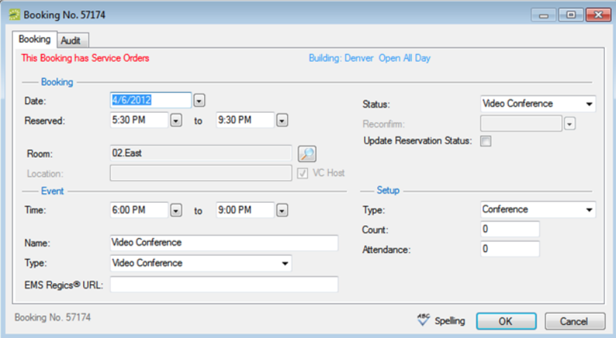

When you edit a booking in the Navigator, you are working with the when and where information for the event: the event time, the event location, and so on. To edit a booking, you must have the appropriate security access. For example, you cannot move a booking to a room if your EMS administrator has not granted you access to the room. Likewise, you cannot change the status for a booking from Tentative to Confirmed if your EMS administrator has not granted you access to the Confirmed status.
Tips: To edit billable information for a booking, See Also: Editing Booking Detail Item Charges for Multiple Items.
You can also edit certain booking information in the Reservation Book. See Also: Editing a Booking. If you cannot edit the booking although you have appropriate access rights, it may be locked.

Tip: If you change the status for a booking, you can select Update Reservation Status to update the reservation-level status to match.
Note: Any date and time changes you make to the booking automatically cascade to all related bookings.
Tip: If you reserve a resource and then edit the date, time, location, or status of a booking, and there is a resource inventory conflict, a Resource Inventory Conflicts report opens next. If you close this report, you can manually run a Resource Inventory Conflict check. In the Bookings folder of the Navigator, select Tools > Resource Inventory Conflict.